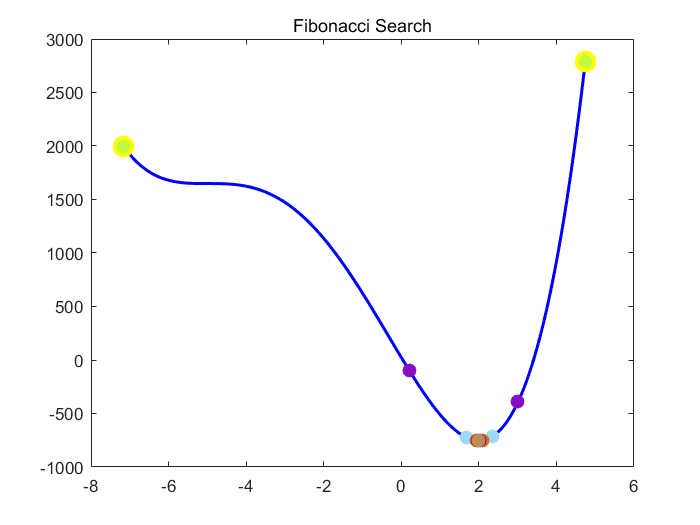
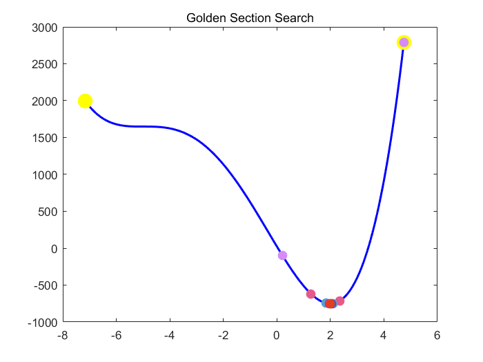

Contents
Problem 4 - find local minima (3*x^4 + 32*x^3 + 30*x^2 - 600*x + 24)
clc;
clear;
close all;
max_iter = 10000;
epsilon = 0.001;
syms x;
f = symfun(3*x^4 + 32*x^3 + 30*x^2 - 600*x + 24, x);
range = 100;
[a, b, time] = initializer(f, range, max_iter);
fprintf('initialize - It takes %fsec to generate interval [%f, %f]\n', time, a, b);
[a_fibo, b_fibo, time, iter] = fibonacci_search(f, a, b, epsilon, max_iter);
fprintf('fibonacci - It takes %fsec to generate interval [%f, %f], the number of iter %d\n', time, a_fibo, b_fibo, iter);
[a_gold, b_gold, time, iter] = golden_search(f, a, b, epsilon, max_iter);
fprintf('golden - It takes %fsec to generate interval [%f, %f], the number of iter %d\n', time, a_gold, b_gold, iter);
initialize - It takes 0.073828sec to generate interval [-7.155268, 4.745177]
fibonacci - It takes 0.377071sec to generate interval [1.999023, 1.999695], the number of iter 20
golden - It takes 0.382552sec to generate interval [1.999782, 2.000268], the number of iter 21
 